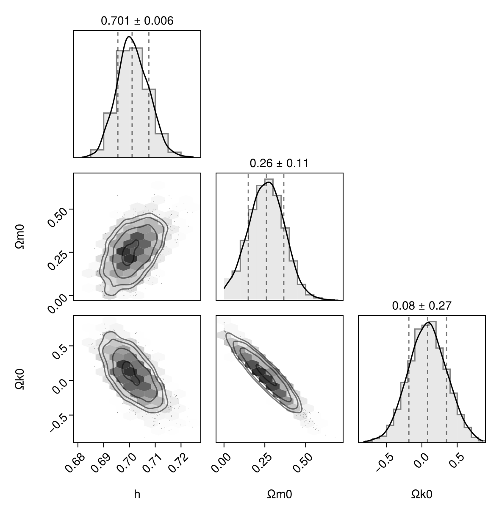
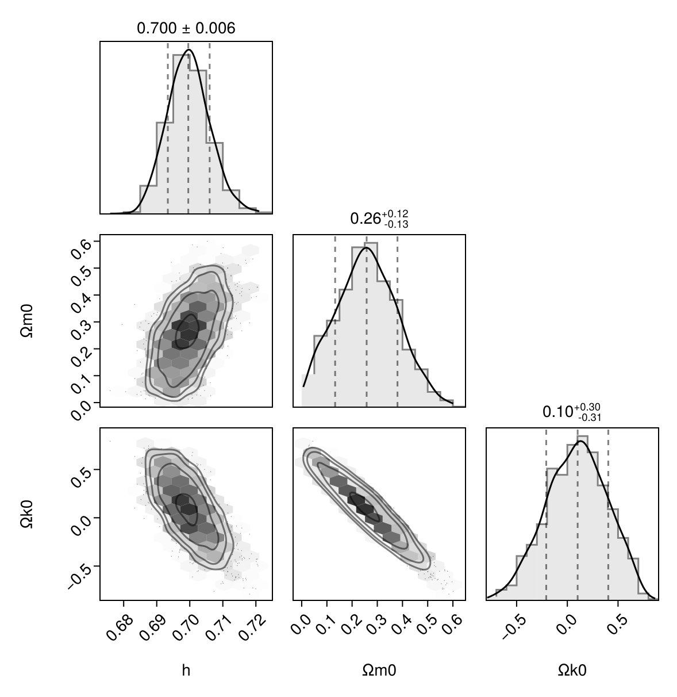
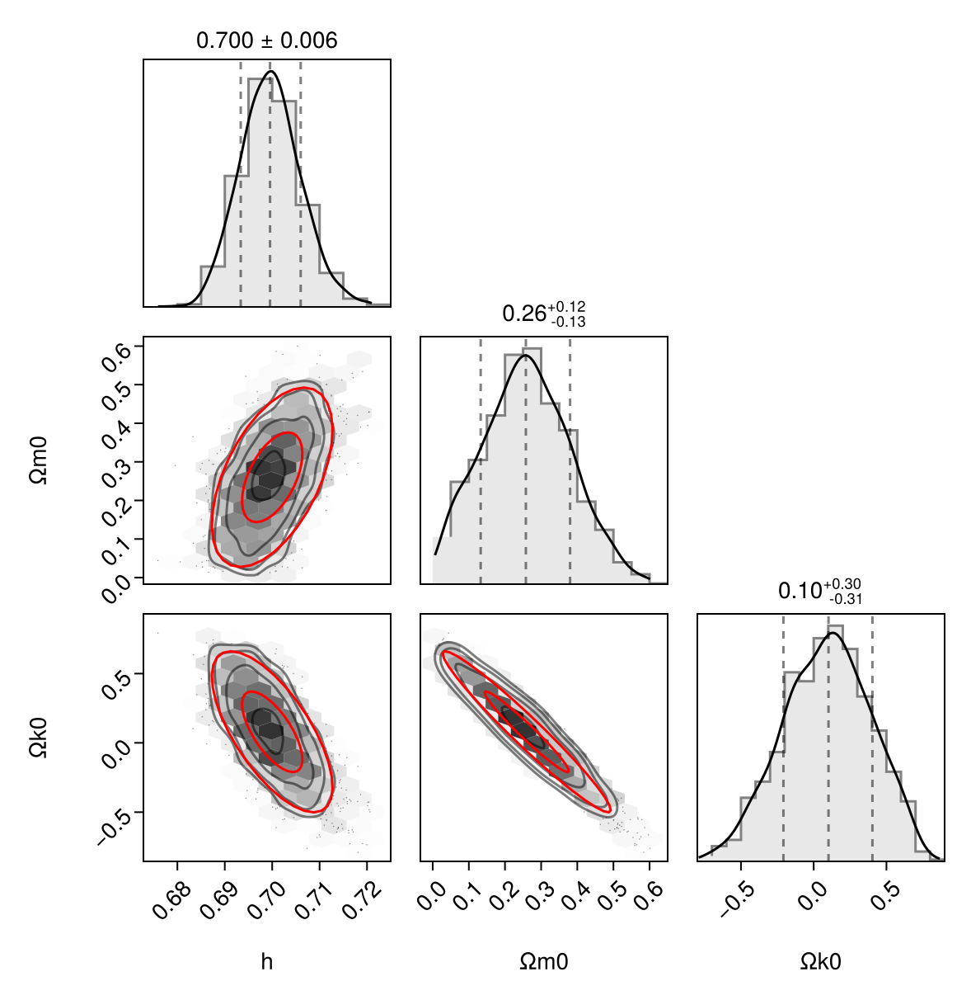

Fitting parameters
This tutorial shows how to perform Bayesian parameter inference on a cosmological model by fitting it to data.
Observed supernova data
We use the data from Betoule+ (2014) of redshifts and luminosity distances of supernovae. Specifically, we use the values and errors in tables F.1 and F.2 (available from the data files data/jla_mub.txt and data/jla_mub_covmatrix.dat):
# TODO: do things properly
# TODO: use full covariance
# TODO: w₀wₐ
using LinearAlgebra # TODO: remove after using full covar?
data = [ # https://cmb.wintherscoming.no/data/supernovadata.txt
# z dL/Gpc ΔdL/Gpc
0.010 0.0390 0.0026
0.012 0.0597 0.0046
0.014 0.0587 0.0021
0.016 0.0666 0.0022
0.019 0.0829 0.0033
0.023 0.0972 0.0025
0.026 0.1123 0.0032
0.031 0.1412 0.0037
0.037 0.1637 0.0043
0.043 0.1936 0.0067
0.051 0.2139 0.0092
0.060 0.2701 0.0077
0.070 0.3062 0.0093
0.082 0.3902 0.0098
0.097 0.4473 0.0123
0.114 0.5279 0.0091
0.134 0.6510 0.0116
0.158 0.7384 0.0118
0.186 0.9087 0.0134
0.218 1.0747 0.0163
0.257 1.2971 0.0189
0.302 1.5172 0.0274
0.355 1.9243 0.0297
0.418 2.2813 0.0436
0.491 2.7943 0.0507
0.578 3.3373 0.0552
0.679 4.0789 0.1179
0.799 5.0213 0.1262
0.940 6.2302 0.1917
1.105 7.9947 0.5692
1.300 9.2121 0.5874
]
reverse!(data; dims=1) # make redshift increasing
data = (zs = data[:,1], dLs = data[:,2], ΔdLs = data[:,3], C = Diagonal(data[:,3] .^ 2))
using CairoMakie
fig = Figure()
ax = Axis(fig[1, 1], xlabel = "lg(1+z)", ylabel = "dₗ/z/Gpc")
scatter!(ax, log10.(data.zs.+1), data.dLs ./ data.zs; label = "observations")
errorbars!(ax, log10.(data.zs.+1), data.dLs ./ data.zs, data.ΔdLs ./ data.zs) #, xlabel = "lg(1+z)", ylabel = "dₗ/z/Gpc", label = "observations")
figPredicting luminosity distances
To predict luminosity distances
\[d_L = \frac{r}{a} = \chi \, \mathrm{sinc} (\sqrt{k} \chi), \qquad \text{where} \qquad \chi = c \, (t_0 - t)\]
theoretically, we solve the standard ΛCDM model:
using SymBoltz, ModelingToolkit
M = RMΛ(K = SymBoltz.curvature(SymBoltz.metric()))
M = change_independent_variable(M, M.g.a; add_old_diff = true)
pars = Dict([M.r.Ω₀, M.m.Ω₀, M.K.Ω₀, M.Λ.Ω₀, M.g.h, M.r.T₀, M.t] .=> [9.3e-5, 0.26, 0.08, 1 - 9.3e-5 - 0.26 - 0.08, 0.7, NaN, 0.0])
prob = CosmologyProblem(M, pars; pt = false, ivspan = (1e-8, 1e0))
# TODO: use luminosity_distance
function dL(sol::CosmologySolution)
M = sol.prob.M
a = sol[M.g.a]
t = sol[M.t]
t0 = t[end]
χ = t0 .- t
Ωk0 = sol[M.K.Ω₀]
r = sinc.(√(-Ωk0+0im)*χ/π) .* χ |> real # Julia's sinc(x) = sin(π*x) / (π*x)
H0 = SymBoltz.H100 * sol[M.g.h]
dLs = r ./ a * SymBoltz.c / H0 # to meters
return dLs / SymBoltz.Gpc # to Gpc
end
# Show example predictions
as = 1 ./ (data.zs .+ 1)
sol = solve(prob, saveat = as, save_end = true, term = nothing)
dLs = dL(sol)
scatter!(ax, sol[log10(M.g.z+1)], dLs ./ sol[M.g.z]; label = "predictions")
axislegend(ax, position = :rb)
figBayesian inference
To perform bayesian inference, we define a probabilistic model in Turing.jl:
using Turing
@model function supernova(zs, dLs, ΔdLs, probgen; Ωr0 = 9.3e-5, bgopts = (alg = SymBoltz.Tsit5(), reltol = 1e-8, maxiters = 1e3), term = nothing, verbose = false)
# Parameter priors
h ~ Uniform(0.1, 1.0)
Ωm0 ~ Uniform(0.0, 1.0)
Ωk0 ~ Uniform(-1.0, +1.0)
ΩΛ0 = 1 - Ωr0 - Ωm0 - Ωk0
p = [h, Ωr0, Ωm0, Ωk0, ΩΛ0]
prob = probgen(p)
as = 1 ./ (zs .+ 1)
sol = solve(prob; bgopts, term, saveat = as, save_end = true)
if !issuccess(sol)
verbose && println("Discarding solution with illegal parameters Ωm0=$Ωm0, Ωk0=$Ωk0")
Turing.@addlogprob! -Inf
return nothing # illegal parameters
end
# Theoretical prediction
dLs_pred = dL(sol)[begin:end-1]
# Compare predictions to data
return dLs ~ MvNormal(dLs_pred, ΔdLs) # multivariate Gaussian # TODO: full covariance
end
probgen = SymBoltz.parameter_updater(prob, [M.g.h, M.r.Ω₀, M.m.Ω₀, M.K.Ω₀, M.Λ.Ω₀]; build_initializeprob = false)
sn = supernova(data.zs, data.dLs, data.ΔdLs, probgen) # condition model on dataWe can find its maximum a posteriori (MAP) parameter estimate using Turing.jl's interface with Optimization.jl and the algorithms in Optim.jl:
using Optim
prior_means = mean.(values(Turing.extract_priors(sn)))
mapest = maximum_a_posteriori(sn; initial_params = prior_means) # or maximum_likelihood(...)
mapest.values3-element Named Vector{Float64}
A │
────┼──────────
h │ 0.701668
Ωm0 │ 0.253696
Ωk0 │ 0.0804127We can now sample from the model using the MAP estimate as starting values, obtaining a MCMC chain:
chain = sample(sn, NUTS(), 2000; initial_params=mapest.values.array) # TODO: speed up: https://discourse.julialang.org/t/modelingtoolkit-odesystem-in-turing/115700/Chains MCMC chain (2000×15×1 Array{Float64, 3}):
Iterations = 1001:1:3000
Number of chains = 1
Samples per chain = 2000
Wall duration = 28.26 seconds
Compute duration = 28.26 seconds
parameters = h, Ωm0, Ωk0
internals = lp, n_steps, is_accept, acceptance_rate, log_density, hamiltonian_energy, hamiltonian_energy_error, max_hamiltonian_energy_error, tree_depth, numerical_error, step_size, nom_step_size
Summary Statistics
parameters mean std mcse ess_bulk ess_tail rhat e ⋯
Symbol Float64 Float64 Float64 Float64 Float64 Float64 ⋯
h 0.7014 0.0061 0.0003 467.4493 511.9786 1.0035 ⋯
Ωm0 0.2579 0.1088 0.0049 454.8217 352.6136 1.0030 ⋯
Ωk0 0.0794 0.2697 0.0128 437.5824 339.3766 1.0026 ⋯
1 column omitted
Quantiles
parameters 2.5% 25.0% 50.0% 75.0% 97.5%
Symbol Float64 Float64 Float64 Float64 Float64
h 0.6901 0.6973 0.7010 0.7055 0.7134
Ωm0 0.0408 0.1853 0.2602 0.3314 0.4677
Ωk0 -0.4410 -0.0987 0.0804 0.2608 0.6025
Finally, we can visualize the chain with a triangle plot using PairPlots.jl:
using PairPlots
pp = pairplot(chain)
Forecasting
Planning future cosmological surveys involves forecasting the precision of the constraints they are believed to place on parameters. Here we show how one can perform forecasting by combining SymBoltz.jl with Turing.jl.
To start, create another probabilistic supernova model, but instead of observed luminosity distances, we now use simulated luminosity distances in a fiducial cosmology:
dLs_fid = dLs[begin:end-1]
pars_fid = [pars[M.g.h], pars[M.m.Ω₀], pars[M.K.Ω₀]]
sn_fc = supernova(data.zs, dLs_fid, data.ΔdLs, probgen)MCMC-driven forecasting
A general assumption-free, but expensive method to perform forecasting is to explore the likelihood using MCMC (as before, only against simulated data):
chain_fc = sample(sn_fc, NUTS(), 2000)
pp_fc = pairplot(chain_fc)
Fisher forecasting
A less general, but cheaper method to perform forecasting is use a second-order approximation of the likelihood around the mean of the probability distribution (i.e. maximum of the likelihood). This technique is called Fisher forecasting, and requires calculation of the Fisher (information) matrix
\[Fᵢⱼ = -\left⟨\frac{∂^2 \log P(θ)}{∂θᵢ \, ∂θⱼ}\right⟩.\]
This effectively measures how quickly the likelihood falls from the maximum in different directions in parameter space. Under certain assumptions, the Fisher matrix is the inverse of the covariance matrix $C = F⁻¹$.
First, we ask Turing to estimate the maximum likelihood mode of the probabilistic model:
maxl_fc = maximum_likelihood(sn_fc; initial_params = pars_fid) # TODO: or MAP?ModeResult with maximized lp of 100.97
[0.7000012563750385, 0.2600067217897602, 0.07997406461463297]As expected, the maximum likelihood corresponds to our chosen fiducial parameters. Nevertheless, the returned mode estimate object offers convenience methods that greatly simplifies our following calculations. Next, we calculate the Fisher matrix from the maximum likelihood, and invert it to get the covariance matrix:
using StatsBase
F = informationmatrix(maxl_fc)
C = inv(F)3×3 Named Matrix{Float64}
A ╲ B │ h Ωm0 Ωk0
──────┼──────────────────────────────────────
h │ 4.05203e-5 0.000390629 -0.00127173
Ωm0 │ 0.000390629 0.01351 -0.0327691
Ωk0 │ -0.00127173 -0.0327691 0.0844706Finally, we derive 68% (1σ) and 95% (2σ) confidence ellipses from the covariance matrix and draw them onto our corner plot:
function ellipse(C::Matrix, i, j, c = (0.0, 0.0); nstd=1, N = 33)
σᵢ², σⱼ², σᵢⱼ = C[i,i], C[j,j], C[i,j]
θ = (atan(2σᵢⱼ, σᵢ²-σⱼ²)) / 2
a = √((σᵢ²+σⱼ²)/2 + √((σᵢ²-σⱼ²)^2/4+σᵢⱼ^2))
b = √((σᵢ²+σⱼ²)/2 - √((σᵢ²-σⱼ²)^2/4+σᵢⱼ^2))
a *= nstd # TODO: correct?
b *= nstd # TODO: correct?
cx, cy = c
ts = range(0, 2π, length=N)
xs = cx .+ a*cos(θ)*cos.(ts) - b*sin(θ)*sin.(ts)
ys = cy .+ a*sin(θ)*cos.(ts) + b*cos(θ)*sin.(ts)
return xs, ys
end
for i in eachindex(IndexCartesian(), C)
ix, iy = i[1], i[2]
ix >= iy && continue
μx = maxl_fc.values[ix]
μy = maxl_fc.values[iy]
for nstd in 1:2
xs, ys = ellipse(C.array, ix, iy, (μx, μy); nstd)
lines!(pp_fc[iy,ix], xs, ys; color = :red)
end
end
pp_fc